4 Introduction to PK Modeling
4.0.1 What is a Model
- a mathematical abstraction
- below is a diagram of a typical PK model
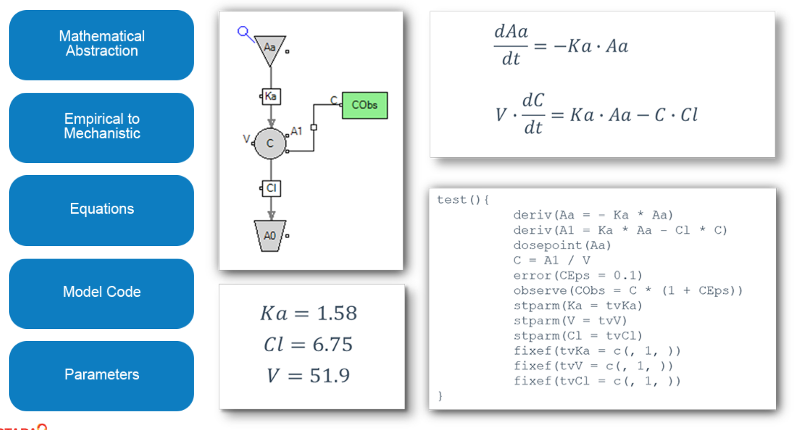- The movement of drug through the body is usually much more complicated than depicted in the diagram but even a simple model such as this can mimic the shape of the observed data and allow us to make predictions.
- models can be anywhere from purely empirical to purely mechanistic
- empirical model is used just because it fits the data without drawing too many conclusions about the process that the drug undergoes while being absorbed distributed metabolized and eliminated
- a mechanistic model accounts for many of the processes that the drug is known to undergo
- the model in the diagram is translated into a series of differential equations
- The equations that describe the model are converted into model code in Phoenix
- Parameter values
4.0.2 Parameterization
- parameterization refers to the type of parameters that are used in the model
- examples include clearance parameters, micro parameters and macro parameters
let’s see how these differ first let’s consider
clearance parameters
- the most widely used
- The parameters in this model are the absorption rate constant, the clearance and the volume
- we suggest using clearance parameters when possible because
- clearances are physiologically relevant and
- clearance-based models tend to be more stable
- it is also easy to obtain initial estimates by using parameters from NCA
micro-parameters
- All the transport is defined in terms of rate constants
- These models are also widely used particularly for more mechanistic
- In the picture model both KA and Ke are rate constants and v is the volume
macro parameter
- These were the first type of parameters to be used in PK modeling
- PK curve is given by an equation that is combination of one or more exponentials
- these parameters are not directly related to the phyiology
Clearance parameters and micro-parameters are easily convertible. Let’s look at the
Firts, let’s consider micro-parameters:
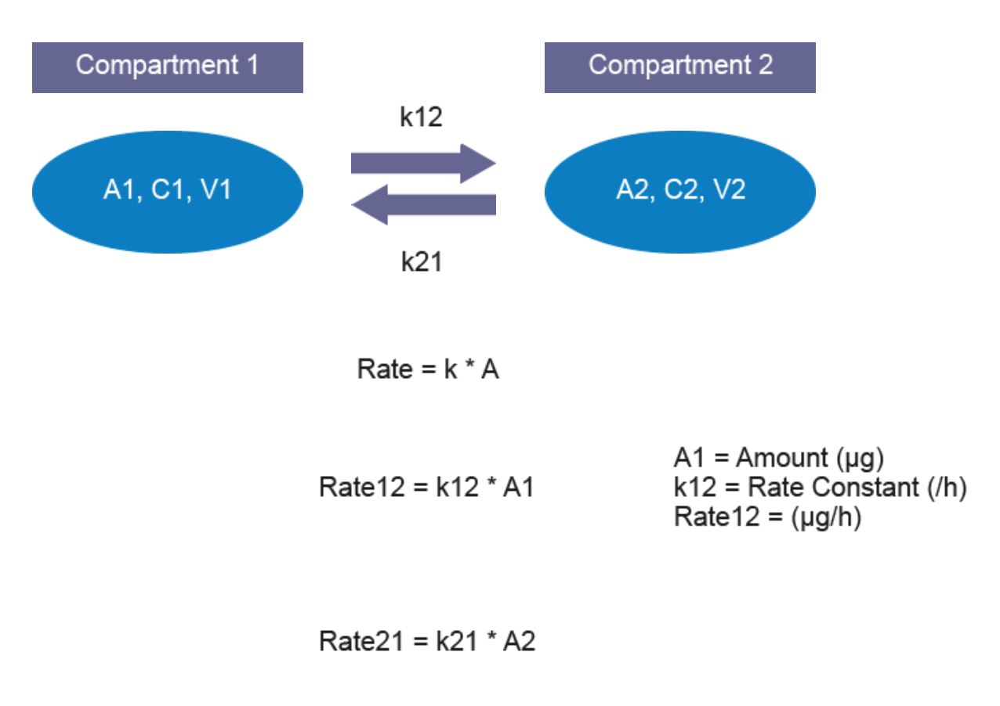
- drug can move in both direction k: rate constants A ;amount of drug in the originative compartment
Next the clearance parameters 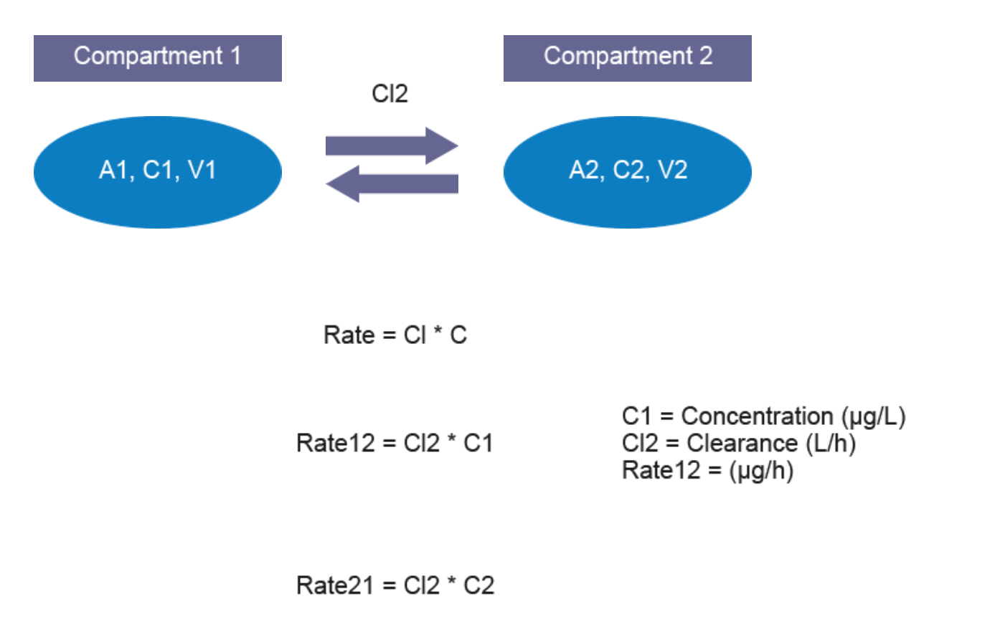
Clearance and microcompartment models are usually equivalent and gives similar results. However, clearance models are more commonly used.
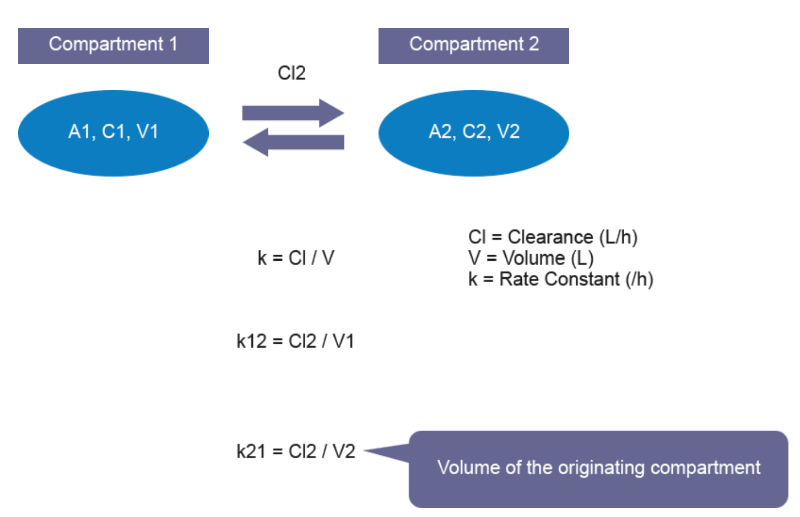
4.0.3 Administration
the way the drug is administered has a large effect on the shape of the PK curve. three types of administration
- Extravascular
- Oral, subcautaneous, intervanious, etc any kind of administration that involves an absorption
- there is a depot compartment that receives the dose
- in Phoenix the dose point is indicated with the blue syringe, The name of the absorption compartment is AA and the absorption rate constant is KA any administration
- Intravenous (IV infusion or IV bolus)
- Delivered at a constant rate for a defined duration or rate
- there is no absorption process and the dose point delivers the drug directly into the central compartment
let’s compare the shapes of PK curves resulting from different administration methods here are three simulations all with - a dose of 5,000 micrograms - a volume of 100 liters - a clearance of 20 liters per hour and - an absorption rate constant ka of 1 per hour
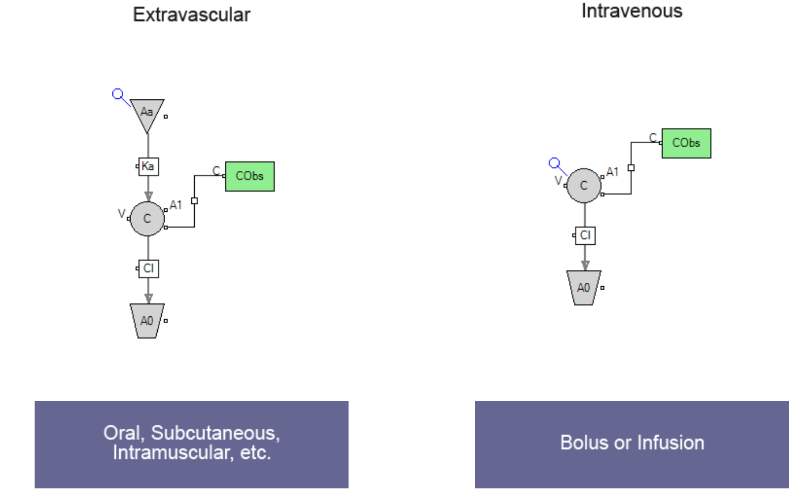
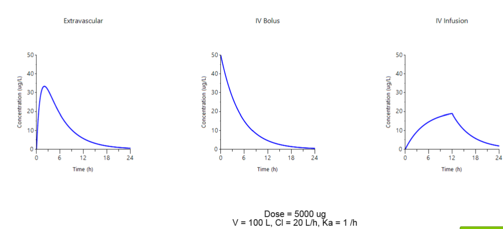
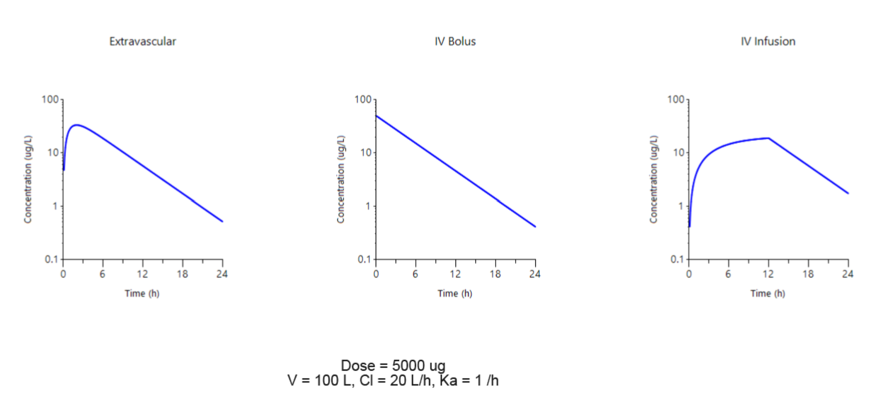
- the elimination phase is linear in all three plots and there is no distribution phase seen
4.0.4 Model structure
- the model structure affects the shape of the pK profile
- three different aspects of model structure
- number of compartments
- presence or absence of a time lag
- saturating elimination
The effect of the number of compartments:
one compartment model is the simplest
- one compartment extravascular model
- has three parameters ka, V and CL
Two compartment models adds a peripheral compartment which can take up some of the drug - needed when there is a sizable distribution phase - five parameters
three compartments - adds two more parameters V3 and CL3 - The three compartment model is not used frequently 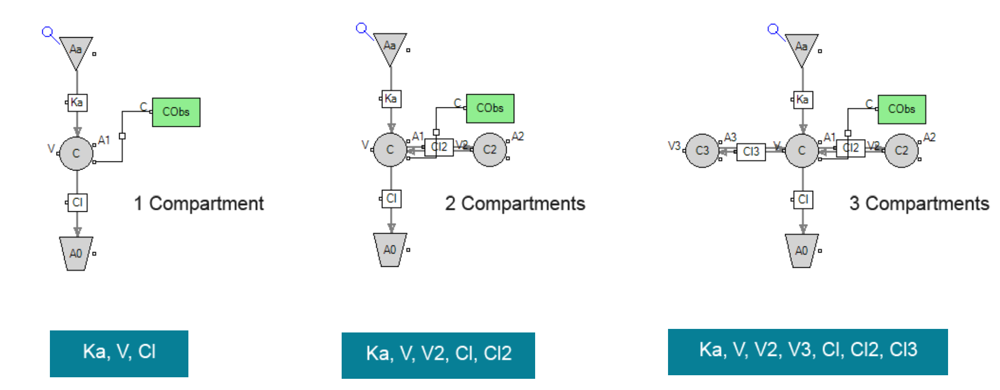
shape but the PK curve
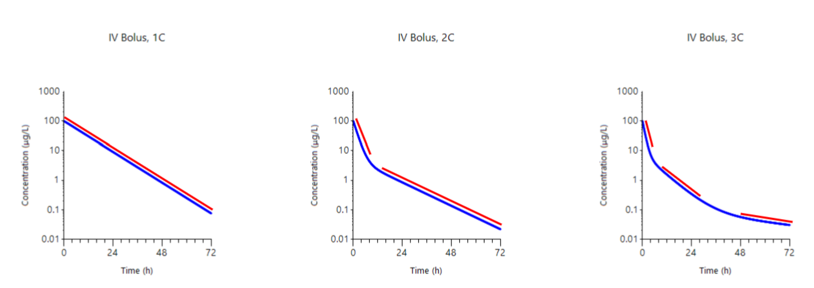 - one compartment IV bolus model is just a straight line when plotted on a log concentration axis - a two compartment model is useful when there is a distribution phase that is different than the elimination phase - The three compartment model can have three distinct phases - it will not always be as apparent that there are multiple phases instead of two distinct phases we may see a general curvature that blends two or more phases together
corresponding extravascular Administration but
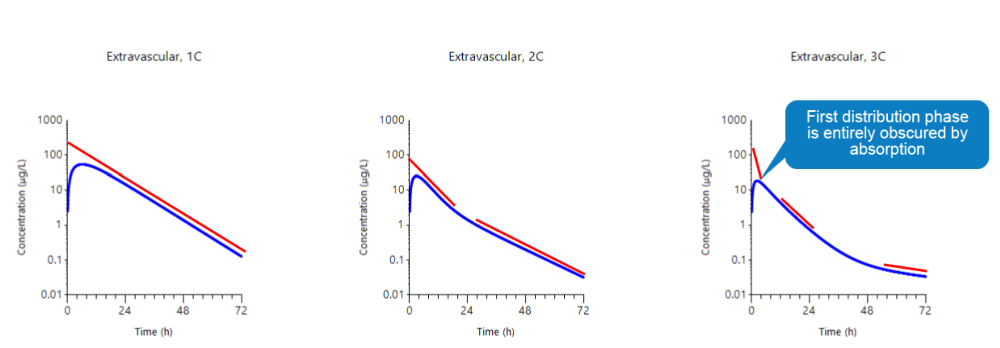 - Early distribution phases can become obscured because of the absorption phase - this is particularly apparent in the three compartment model where the first distribution phase is entirely obscured by the absorption
Time lag
many drugs take some time to show up in systemic circulation and the time lag is a way that we can account for this in our model
on the left is a model with the time lag and on the right is the corresponding model without a time lag T-Lag is a parameter that causes the absorption to be delayed Time lag has the same time units as the time column
- add a time lag to your model if tmax does not fit properly
- The model fit can then adjust both the KA and the T-Lag values to obtain and improve fit
saturation
linear elimination saturation is often referred to as Michaela
replaces clearance parameter with Km and Vmax 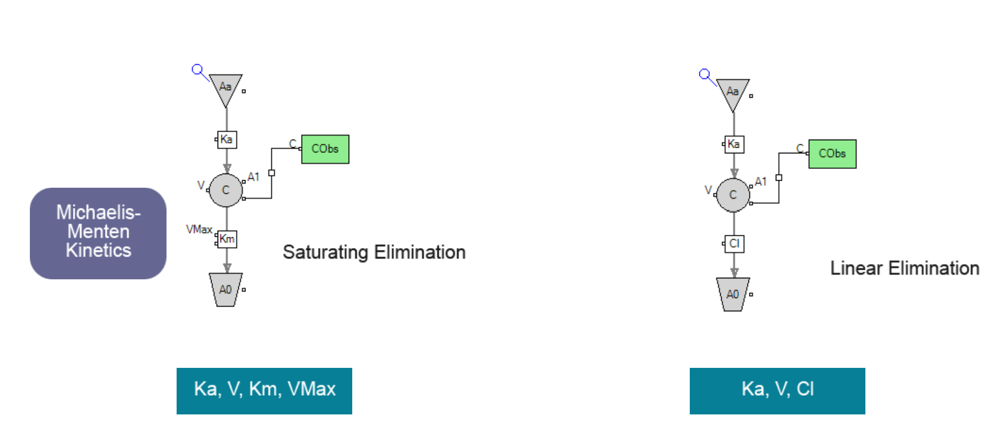 Clearance is no longer constant. Clearance is depended on the concentration. downward bend is characteristics of saturating kinetics saturation increased with higher doses.
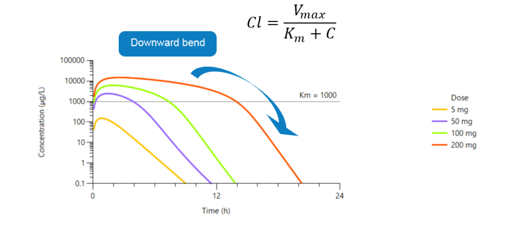 Let’s see how this change affects the shape of the PK curve click next to continue 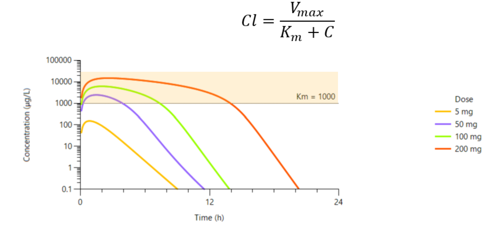 here are simulated curves for a drug that has a Km value of 1,000 in a saturating model clearance becomes the expression Vmax over km + C. this means that clearance depends on the concentration and the clearance is no longer constant notice how different doses have PK curves with dramatically different shapes notice how many of the curves have a downward bend this downward bend is a characteristic of saturating kinetics it may not be observed at lower doses but as the dose increases we may encounter saturation and it is useful to know what it looks like at the lowest dose shown here the yellow curve looks just like a one compartment model with linear kinetics as the dose increases we see more saturation notice how
when the concentration is higher than the Km value the apparent clearance is much lower and the slopes are much shallower at higher concentrations scale
This breakdown the dose proportionality
Linear scale:
- The increase in AUC is far beyond what we would have predicted under linear kinetics
- In cases were saturation is observed it is important to have data from more than one dose amount so that you can obtain in reliable parameter estimates
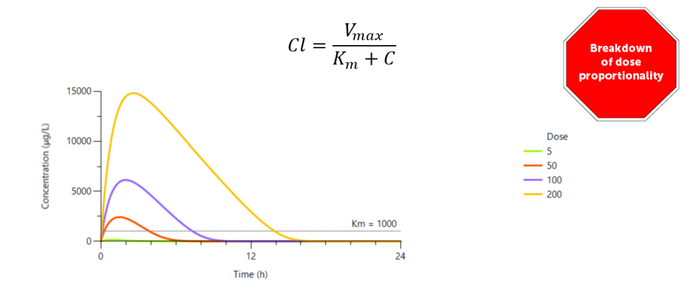
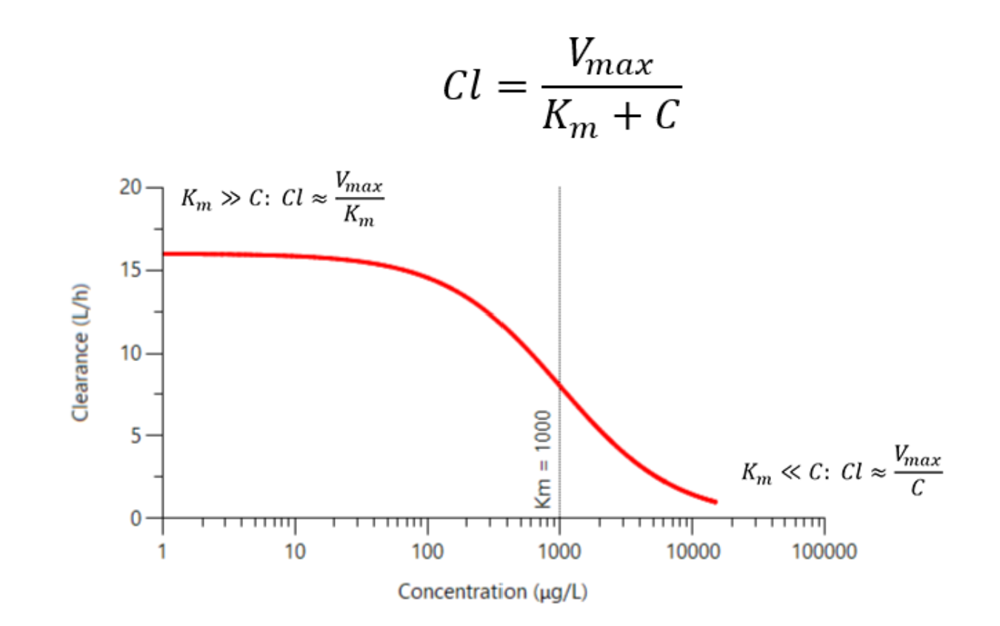 if we consider the expression for the effective clearance at different concentrations we can consider two extremes when the concentration is much lower than the Km value we do not see any saturation and the clearance is constant clearance over Km at the other extreme when the concentration is much greater than the KM value The clearance reduces to Vmax over c as the concentration increases the clearance becomes progressively smaller at very high concentrations we are overwhelming the elimination pathway usually this happens when an enzyme has a finite capacity to eliminate the drug and we are overloading it you may never need to create a model with saturating elimination but it is good to know when to recognize that saturation
let’s recap the section we have seen that the model structure is typically defined by the number of compartments the presence or absence of a time lag and the possibility of saturating elimination These three items can be combined to make a very large number of potential models click next to continue
4.0.5 Residual error
Residual error:the difference between the observed and predicted concentrations DV: dependent variable or observed concentration
IPRED: Individual prediction, the predicted concentration
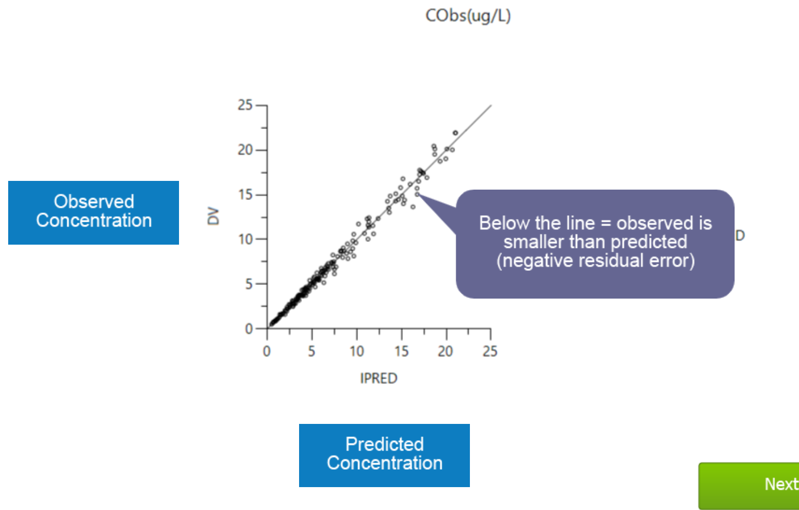
ideal prediction would fall on the line positive residual error negative residual error
Let’s look at another type of plot that is more useful for examining the residuals click next to continue
- These plots show us the residuals on the y-axis with either the predicted concentration or the time on the x-axis
- each point is a residual error
- both plots have the same number of points they’re just arranged differently
- The dotted lines represent two standard deviations in the positive and negative directions
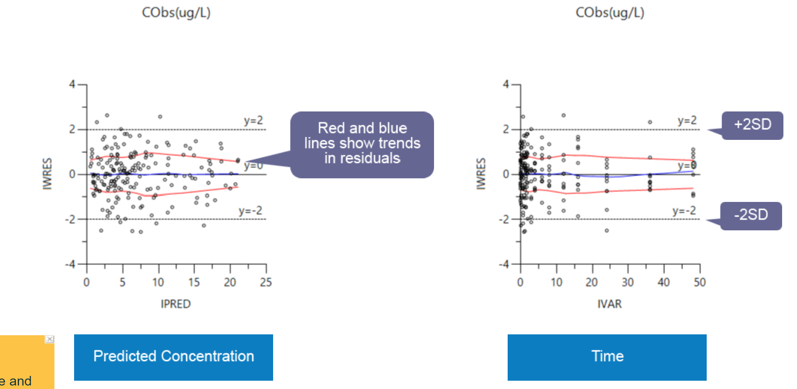
Residual worksheet contains the data that was plotted Ires: individual residual, difference between DV and IPRED
different methods for the residual error - additive : assumes that all errors are constant regardless of concentration . In practice we usually find that the error magnitude becomes smaller at smaller concentrations and therefore additive is not often the best choice - multiplicative, assumes that the errors are proportional to the concentration of - additive plus multiplicative: partly constant, partly proportional. at higher concentrations the error magnitude is proportional but at small concentrations the error reaches a threshold and does not decrease any more as the concentration falls
Use multiplicative the initial choice of residual error when building models
Start your modeling using a multiplicative residual error as you are optimizing the structural model - after you have decided on the best structural model then you can start optimizing the residual error model
5 Summary
5.1 pk model 1
5.1.1 Concentrations should be stacked
data format for PK models - observed concentration stacked into a single column - multiple analytes or metabolites concentration should be its own column
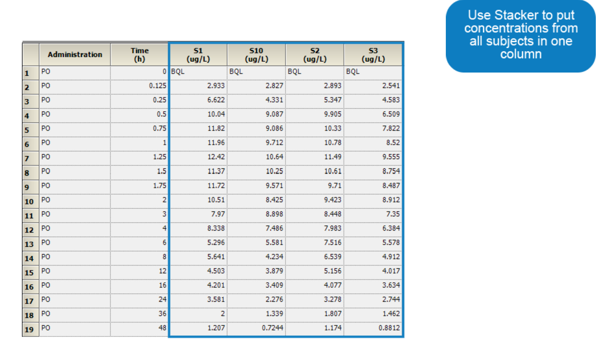 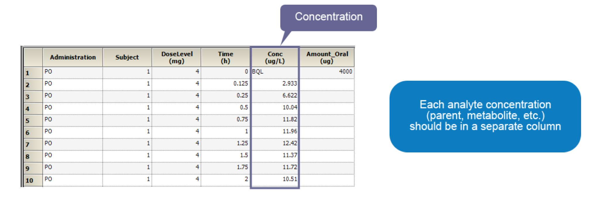
Sort variables
- For multiple PK profiles, one or more sort variables are required.
- Sort variables need to have a value on every row
- In Phoenix text values, blank cells are not a problem
- All non-numeric data is ignored by the model
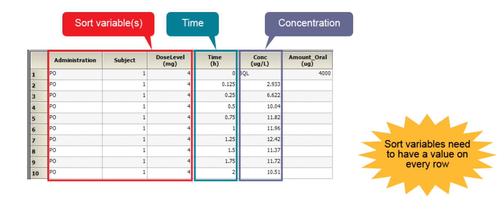
- amount oral column has a value at time zero and the rest of the rows are blank. The dose amount is given only on the row the corresponds to a dosing event
- dose level column has a value on every row
- units: unlike NCA the model object does not translate units
- The dose unit should always be the same as the unit in the concentration
And your parameter values keep them the same so that the units will work out properly One more warning the model object allows you to either map the dosing amounts in the main input or the dosing input Make sure that you don’t map the dose amount in both places or your administered dose will be twice as large as you intended click next to continue let’s recap the section we saw how the model object requires stacked concentrations you should have a single concentration column for each observation second we use sort variables to define the individual PK profiles there’s nothing wrong with having more sort variables than you need third we saw how dosing events can be included in the data set remember that these are entered on the row at the time of the dosing event and finally we learned that text values and empty cells are okay in the input and we do not have to do anything to them this completes the section click